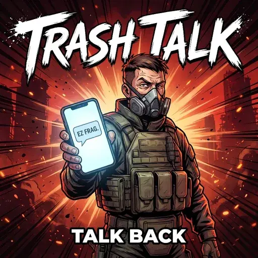

Trash Talk
- Downloads
- 1,330
- Favourites
- 8
- Mod lists
- 21
Ever get that smug message from the PMC who killed you — or the one you killed — and wish you could talk back? Now you can. TrashTalk unlocks the reply box on those PMC messages and gives every bot a real, AI-generated voice: they answer what you actually typed, remember the conversation, and know exactly how the kill went down (weapon, distance, map). Every PMC gets a randomly rolled personality — cocky, bitter, respectful, unhinged, darkly funny, or barely bothered — that sticks for the whole conversation.
- Works with brand-new kill messages AND PMC messages already sitting in your inbox
- Replies arrive after a realistic 15-75 second “typing” delay (configurable)
- Personalities, prompt, delays, and backend all editable in config.json
- If the AI backend is unreachable, nothing breaks — the bot just doesn’t text back
Requires a local LLM (free, recommended — see LLM Setup tab) or your own API key. Solo SPT only — not Fika compatible.
Hooking up the AI
TrashTalk doesn’t come with an AI inside it — you plug one in. It can be one
running on your own PC, or a free cloud one. Either way it’s a one-time setup
in SPT/user/mods/TrashTalk/config.json and you never touch it again.
Only three lines in there really matter:
endpoint— the web address the mod sends the conversation tomodel— which AI at that address writes the replyapiKey— your personal key for the service (cloud only, local needs none)
Pick ONE option below.
Option 1 — Ollama (runs on your PC, no account needed)
- Install Ollama
- Open a terminal and run:
ollama pull llama3.2 - Done. The mod’s default config already points at it.
Fully private, works offline, costs nothing. The trade-off: a model small enough to share your PC with Tarkov isn’t the sharpest — replies can come out flat or repetitive. It uses your GPU for a few seconds per reply (~2GB VRAM), and replies fire while you’re in menus, not mid-raid.
Option 2 — Groq (free cloud, best model)
Sign up at console.groq.com, then go to console.groq.com/keys and create a key. Copy it right away — it’s only shown once.
"endpoint": "https://api.groq.com/openai/v1/chat/completions",
"model": "llama-3.3-70b-versatile",
This is a 70B model — way bigger than anything your GPU could run next to Tarkov — and Groq is stupid fast, so replies generate near instantly. Free tier is around 1000 replies a day, which you will never hit.
Option 3 — Google Gemini (free cloud, easiest signup)
If you have a Google account you’re already signed up. Go to aistudio.google.com/apikey, hit Create API key, and use:
"endpoint": "https://generativelanguage.googleapis.com/v1beta/openai/chat/completions",
"model": "gemini-3-flash-preview",
"maxTokens": 4096,
That maxTokens line is not optional here. Gemini 3 “thinks” before it
writes, and the thinking silently eats out of the same token budget — in my testing it burned anywhere from 150 to 700 tokens of thinking just to write one sentence, and it occasionally spikes past 1000 — set maxTokens to 4096 and cutoffs never happen. Free tier is around 250 replies a day.
Option 4 — already have an account somewhere?
- OpenRouter: endpoint
https://openrouter.ai/api/v1/chat/completions, modelmeta-llama/llama-3.1-8b-instruct:free(or any paid model they list) - OpenAI: endpoint
https://api.openai.com/v1/chat/completions, modelgpt-4o-mini(cheap, not free)
The two settings nobody explains
- maxTokens — the size cap on a single reply, NOT a usage quota. It doesn’t make replies longer (the mod’s prompt keeps PMCs texting in 1-2 short sentences regardless) and it doesn’t cost you anything extra on free tiers. The only reason to care: thinking models like Gemini 3 spend invisible tokens before writing. 4096 is safe everywhere, so just use that.
- temperature — how predictable the replies are. Low means the same kill gets you nearly the same message every time, higher means spicier and more random. The default 0.9 is where the personalities actually come through. Drop toward 0.5 if replies feel like nonsense, and don’t go much above 1.0 or they will be.
After any config edit: restart the SPT server — the config only loads at startup. And never share your config file, your API key is in it.
- Extract the archive
- Drop the
BepInExandSPTfolders into your SPT root directory - Set up an LLM backend (see LLM Setup tab)
- Kill a PMC (or get killed), check your messages after the raid, and talk back
- Not Fika compatible (solo SPT only)
- Old messages (from before installing) work, but the bot won’t know exact kill details for them
- If you find a bug, please report it (see Support tab)
Found a bug or have a question? Leave a comment on this mod’s page, or reach out in my thread on the SPT Discord: https://discord.com/channels/875684761291599922/1521972310595338260
Version
1.0.0
TrashTalk 1.0.0
- Reply to the post-raid messages from PMCs you killed (or who killed you) — and get real, AI-generated answers back
- Bots stay in character, remember how the fight went down, and hold a running conversation
- Powered by a free local LLM (Ollama) or your own API key — see the LLM Setup tab
- Solo SPT only (not Fika compatible)